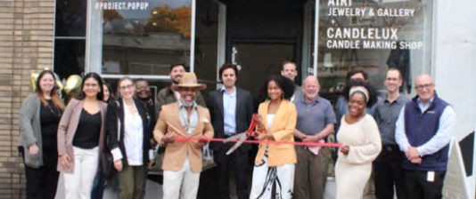

Results that matter

Working for Brookline
Experience you can point to.
Protecting neighborhood character
Supporting local business and vitality
Advocating for practical infrastructure fixes
Focusing on steady, independent judgment